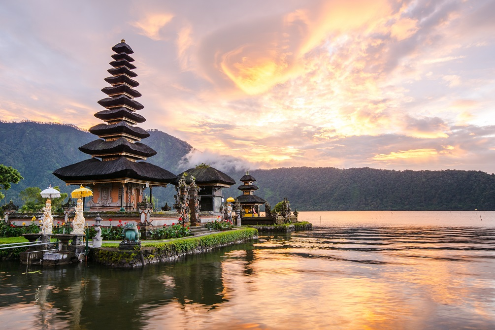

Discovering the Magic of Bali

Bali, the Island of the Gods, is known for its beautiful beaches, lush landscapes, and vibrant culture. From exploring ancient temples to lounging on pristine beaches, Bali offers something for every traveler.
Must-Visit Places:
- Uluwatu Temple - A stunning sea temple perched on a cliff.
- Rice Terraces of Tegalalang - A breathtaking view of the iconic rice paddies.
- Seminyak Beach - Known for its upscale beach clubs and restaurants.
- Ubud Monkey Forest - A lush sanctuary home to hundreds of playful monkeys.
Travel Tips:
Don't forget to try the local cuisine and consider renting a scooter to explore the island at your own pace!